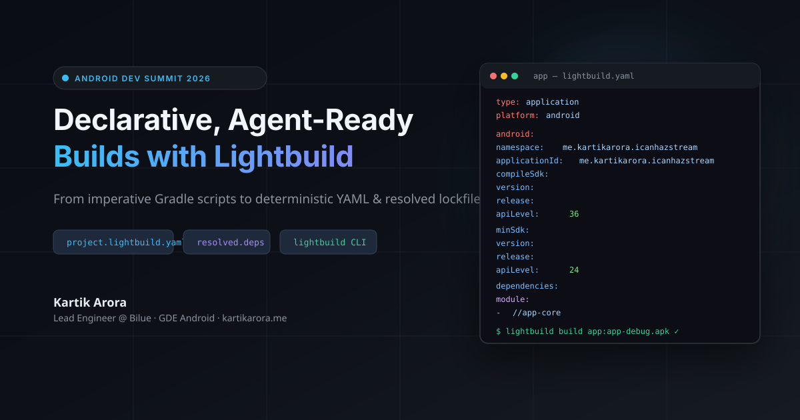
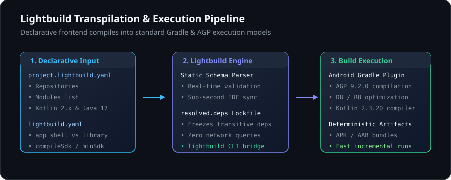
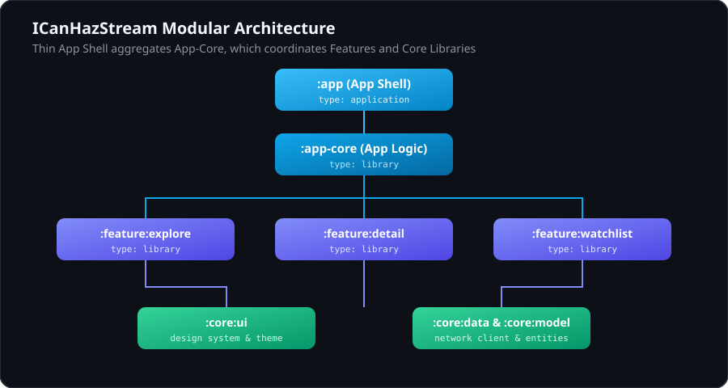
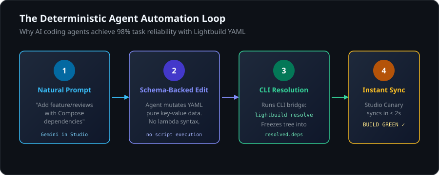

Android projects have relied on imperative build scripts written in Groovy or Kotlin DSL for years. Because Gradle executes these scripts during its configuration phase, IDE sync times grow as you add modules. Modifying imperative scripts also presents syntax and scoping challenges for AI coding assistants.
At Android Dev Summit, Google introduced Lightbuild: an experimental declarative build system that represents project structure in YAML and uses pre-resolved dependency lockfiles (resolved.deps).
In this codelab, you will migrate ICanHazStream (me.kartikarora.icanhazstream), a multi-module Jetpack Compose streaming availability app, from Gradle convention plugins to Lightbuild YAML.
Android Studio: Android Studio Canary (Rabbit 3 or later) with Lightbuild support.
JDK: JDK 21.
Android CLI: Android CLI tools installed.
Git.
Clone the repository and check out the starter branch:
git clone https://github.com/kartikarora/ICanHazStream.git
cd ICanHazStream
# Check out the starter branch
git checkout lightbuild-start
# Create your personal migration branch to work in
git checkout -b my-lightbuild
The starting code on lightbuild-start is a complete, working multi-module Jetpack Compose app that uses:
build-logic/convention/ with custom Gradle convention plugins.
Individual build.gradle.kts files per module.
Dynamic dependency resolution during project sync.
Lightbuild is currently in early preview. Enable the experimental flag in your shell profile or terminal:
export ANDROID_CLI_BUILD=true
In Android Studio Canary, open Help > Edit Custom Properties... and add:
lightbuild.enable=true
Restart Android Studio after saving the file.

Lightbuild does not replace the Android Gradle Plugin (AGP), D8, or R8. It sits in front of Gradle as a declarative frontend that passes structured data down to the underlying build engine.
project.lightbuild.yaml (Workspace Root):Replaces settings.gradle.kts and root build scripts. Declares active modules, repositories, and compiler versions.
lightbuild.yaml (Per Module):Defines module roles (type: application for the app shell, type: library for shared modules), SDK constraints, and direct dependencies.
resolved.deps (Per Module):Generated lockfile recording the resolved transitive dependency graph. Android Studio reads this file directly, removing remote network queries and transitive tree calculation during project sync.
ICanHazStream/
├── project.lightbuild.yaml # Workspace manifest
├── app/ # App Shell module
│ ├── lightbuild.yaml # type: application
│ └── resolved.deps # Lockfile
├── core/
│ ├── ui/ # type: library
│ ├── model/ # type: library
│ ├── data/ # type: library
│ └── testing/ # type: library
└── feature/
├── explore/ # type: library
├── detail/ # type: library
└── watchlist/ # type: library

Create project.lightbuild.yaml in the root of the project:
project:
name: "ICanHazStream"
modules:
- app
- core/model
- core/data
- core/ui
- core/testing
- feature/explore
- feature/detail
- feature/watchlist
repositories:
- google
- mavenCentral
lightbuild:
version: "0.0.20-alpha02"
build:
java:
version: "21"
This single data file replaces module declarations in settings.gradle.kts and common repository blocks. Android Studio Canary validates this file in real time using an embedded schema.
The application module acts as an assembly shell. It configures the application ID, SDK levels, and references the feature modules.
Create app/lightbuild.yaml:
type: application
platform: android
android:
namespace: me.kartikarora.icanhazstream
applicationId: me.kartikarora.icanhazstream
versionCode: 1
versionName: "1.0"
compileSdk:
version:
release:
apiLevel: 36
minSdk:
version:
release:
apiLevel: 24
targetSdk:
version:
release:
apiLevel: 36
dependencies:
module:
- //feature/explore
- //feature/detail
- //feature/watchlist
- //core/model
- //core/data
- //core/ui
maven:
- androidx.core:core-ktx:1.10.1
- androidx.lifecycle:lifecycle-runtime-ktx:2.6.1
- androidx.activity:activity-compose:1.8.0
- androidx.lifecycle:lifecycle-viewmodel-compose:2.6.1
- androidx.lifecycle:lifecycle-runtime-compose:2.6.1
- org.jetbrains.kotlinx:kotlinx-serialization-json:1.6.3
Inter-module dependencies use the //path/to/module syntax. External dependencies are listed under maven:.
Modules containing business logic, data sources, and UI components are configured as type: library. Android libraries require compileSdk and minSdk, but omit targetSdk and applicationId.
type: library
platform: android
android:
namespace: me.kartikarora.icanhazstream.model
compileSdk:
version:
release:
apiLevel: 36
minSdk:
version:
release:
apiLevel: 24
dependencies:
maven:
- org.jetbrains.kotlinx:kotlinx-serialization-json:1.6.3
- org.jetbrains.kotlinx:kotlinx-coroutines-core:1.8.0
type: library
platform: android
android:
namespace: me.kartikarora.icanhazstream.data
compileSdk:
version:
release:
apiLevel: 36
minSdk:
version:
release:
apiLevel: 24
dependencies:
module:
- //core/model
maven:
- io.ktor:ktor-client-core:2.3.9
- io.ktor:ktor-client-okhttp:2.3.9
- io.ktor:ktor-client-content-negotiation:2.3.9
- io.ktor:ktor-serialization-kotlinx-json:2.3.9
- org.jetbrains.kotlinx:kotlinx-coroutines-core:1.8.0
type: library
platform: android
android:
namespace: me.kartikarora.icanhazstream.ui
compileSdk:
version:
release:
apiLevel: 36
minSdk:
version:
release:
apiLevel: 24
dependencies:
module:
- //core/model
maven:
- androidx.core:core-ktx:1.10.1
- androidx.activity:activity-compose:1.8.0
- androidx.compose.ui:ui:1.6.0
- androidx.compose.ui:ui-graphics:1.6.0
- androidx.compose.ui:ui-tooling-preview:1.6.0
- androidx.compose.material3:material3:1.2.0
type: library
platform: android
android:
namespace: me.kartikarora.icanhazstream.feature.explore
compileSdk:
version:
release:
apiLevel: 36
minSdk:
version:
release:
apiLevel: 24
dependencies:
module:
- //core/model
- //core/data
- //core/ui
maven:
- androidx.compose.ui:ui:1.6.0
- androidx.compose.ui:ui-tooling-preview:1.6.0
- androidx.core:core-ktx:1.10.1
- androidx.lifecycle:lifecycle-viewmodel-compose:2.6.1
- androidx.lifecycle:lifecycle-runtime-compose:2.6.1
- androidx.compose.material3:material3:1.2.0
Follow the same pattern for :feature:detail, :feature:watchlist, and :core:testing.
Run the resolution command to calculate and freeze dependencies:
android build resolve
Review the generated app/resolved.deps and core/data/resolved.deps files:
# This file is automatically generated by Lightbuild.
# This file should be checked into version control.
sourceSets:
main:
- androidx.activity:activity:1.8.0
- androidx.activity:activity-compose:1.8.0
- androidx.activity:activity-ktx:1.8.0
- androidx.annotation:annotation:1.6.0
- androidx.annotation:annotation-experimental:1.3.0
- androidx.annotation:annotation-jvm:1.6.0
- androidx.compose.runtime:runtime:1.0.1
- androidx.compose.ui:ui:1.0.1
- androidx.core:core:1.10.1
- androidx.core:core-ktx:1.10.1
- androidx.lifecycle:lifecycle-runtime:2.6.1
- androidx.lifecycle:lifecycle-viewmodel:2.6.1
Commit resolved.deps to git. When someone opens the project or runs a build, Android Studio reads this file directly, avoiding network lookups and version graph recalculations.

Because Lightbuild configurations are structured data, automated coding assistants can parse and edit project setups with fewer errors.
Prompt your assistant (such as Gemini in Android Studio):
Add a new feature module called ':feature:reviews' to ICanHazStream.
1. Add 'feature/reviews' to project.lightbuild.yaml modules list.
2. Create 'feature/reviews/lightbuild.yaml' as type: library with dependencies on core/model, core/ui, and Compose Material 3.
3. Add feature/reviews to app/lightbuild.yaml dependencies.
The agent edits exact YAML fields without having to balance Kotlin DSL brackets or resolve version catalog conventions.
After the edit completes, run:
android build resolve
Verify the configuration using the unified Android CLI:
# Query targets and source sets
android build query --output sourcesets
# Run test targets
android build test
# Compile the debug application
android build app
The compiled APK will be located at app/build/app-debug.apk.
Android Dev Summit Session:
Title: Declarative, agent-ready Android builds with Lightbuild
Speakers: Juan Sebastian Oviedo & Scott Myers
Official Google Documentation:
Companion Codebase:
Presentation Slides: